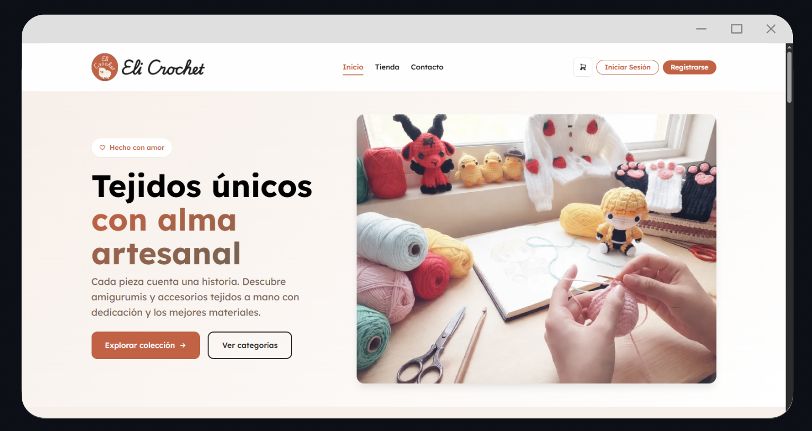
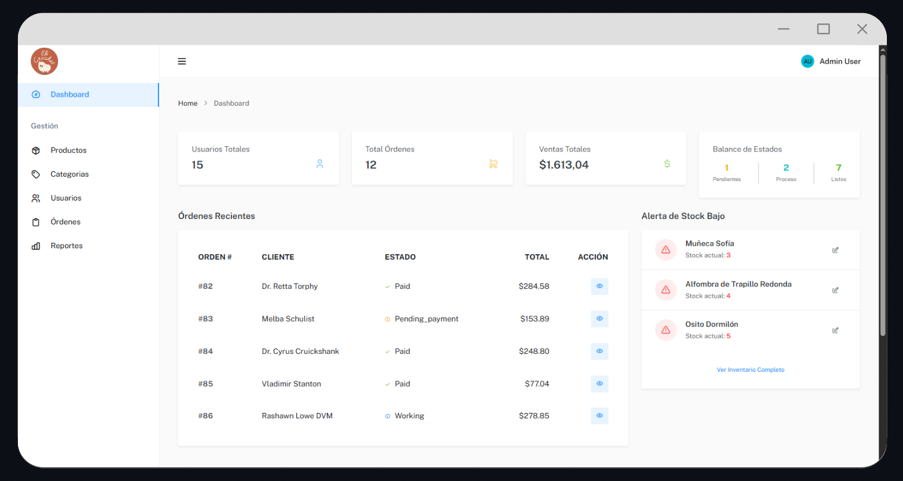

EliCrochet e-commerce
Tienda en línea para EliCrochet, una microempresa ecuatoriana de artesanías en crochet. Reúne catálogo, pagos en línea y pedidos personalizados en un solo lugar, en vez de coordinarlos por chats de WhatsApp.
# Laravel 12 · PHP 8.4 · MySQL / SQLite · Bootstrap 5 · PayPhone · Pest · GitHub Actions · SonarCloud · Docker## pruébalo
Entra a la demo en vivo ↗ con cualquiera de estas cuentas. La
contraseña de todas es password.
- administrador
- admin@elicrochet.com
- cliente
- test@example.com
La demo está en un plan gratuito: si nadie la usó en los últimos minutos, la primera carga puede tardar cerca de un minuto. Los datos se reinician cada vez que el servidor arranca. Los pagos usan la pasarela simulada: no se cobra nada.
## contexto
EliCrochet vendía por WhatsApp: el catálogo, el inventario, los pedidos y los pagos se coordinaban a mano, conversación por conversación. Era difícil saber qué había en stock, seguir cada pedido y atender los encargos personalizados.
La plataforma digitaliza la tienda completa: catálogo con carrito y pago en línea, un flujo de cotización para pedidos a medida, reseñas de compradores verificados y un panel de administración con reportes financieros.
## capturas


## qué hace
- Catálogo por categorías, con especificaciones configurables para cada categoría.
- Carrito y checkout con la pasarela de pago PayPhone.
- Pedidos personalizados: el cliente pide una cotización con imágenes de referencia, el administrador la valora y el cliente paga desde su cuenta.
- Reseñas verificadas: solo puede reseñar quien compró el producto y tiene la orden completada.
- Inicio de sesión con cuenta propia o con Google.
- Panel de administración con productos, categorías, usuarios, órdenes y reportes financieros exportables.
- Correos transaccionales: confirmación de pago, cambios de estado y cotizaciones.
## decisiones técnicas
- un pago aprobado se procesa de forma atómica
- El cambio de estado, el vínculo con el pedido personalizado, el descuento de stock y el vaciado del carrito ocurren en una sola transacción. Si falta stock de algún producto, se revierte todo y la orden no queda a medias. Los productos que se quedan sin stock pasan a borrador automáticamente.
- pasarela simulada sin credenciales
- Si no hay credenciales de PayPhone, el sistema muestra una pantalla propia para aprobar o rechazar el pago, y el resto del flujo (orden, stock y correos) se ejecuta igual que con un pago real. Así se puede desarrollar y probar el checkout completo sin una cuenta comercial.
- lógica de negocio en servicios
- El carrito, el checkout, los pedidos personalizados y PayPhone
viven en
app/Services, y los controladores están separados por área (tienda, cliente y administración). Así los controladores se mantienen delgados y fáciles de probar. - listo en un comando
- SQLite es el motor por defecto y
composer run setupdeja el proyecto funcionando con datos de demostración, sin instalar una base de datos.
## calidad
- En cada push, el CI en GitHub Actions ejecuta Laravel Pint, la suite de pruebas y el análisis de SonarCloud.
- Exige una cobertura mínima del 60%; la actual ronda el 81%.
- Entorno con Docker / Laravel Sail además de la instalación local con SQLite.